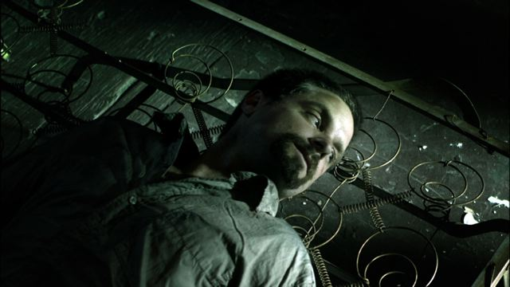

Posts by Rick
You can help us kickoff fundraising for the 2012 2011 Flyway Film Festival
This fabulous banner is currently up for sale. It is the very banner which hung on the outside of the 2011 2011 Flyway Film Festival Lounge at the Breakwater in Pepin.
It is approximately 5ftx8ft, and would fit nearly any decor. It has pole pockets at the top and bottom, as well as five grommets at each end.
We’ll even have artist Gaylord Schanilec sign it in a big black sharpie.
If interested please email us at: info@flywayfilmfestival.org
We’ll take the highest offer we have by Jan 1, 2012. We can accept cash, check or credit card.
Thank you for your support!
DIY Film Fest by Kingisafink
Thanks to everyone that came out and supported the 2011 2011 Flyway Film Festival.
Special thanks to the volunteers that worked long hours to make sure tickets were taken, that sound and projection worked and that our guests were happy.
…and of course we can’t do it without our sponsors and patrons.
Our gratitude to everyone is immense. We cannot do it without all of you!

Flyway Partners with National Marrow Donor Program for Screening of “More to Live For”
When “More to Live For” airs at the 2011 Flyway Film Festival on Sunday, October 23, it will offer more than just a screening of a new film.

The documentary, by filmmaker Noah Hutton, will be followed by an opportunity for those inspired by the film to take action. They can head to an adjacent hospitality tent to have an inner cheek swabbed by local representatives from the National Marrow Donor Program and enter into the Be the Match Registry.

In the film, director Hutton (the son of actress Debra Winger and Oscar-winning actor Timothy Hutton) has crafted a tale of three men whose lives couldn’t be more disparate, except they all are gifted and ambitious.
James Chippendale is a Texan who owns a company that insures musical performances. Seun Adebiyi is a native of Nigeria who grew up in Alabama, graduated from Yale Law School and wants to compete in the Winter Olympics in skeleton (a type of sled racing). Michael Brecker is probably the best-known of the men. He’s one of the most influential tenor saxophonists ever, and winner of 15 Grammy Awards.
What all three men shared was a diagnosis of leukemia — which they could only survive if they found a bone marrow match from a donor. The men had no matches in their immediate families, and the film traces their race against time, capturing the immense tension they and their families endure as they organize donor drives and pray for a match.
2011 Flyway Film Festival organizers say that programs like the one with Be the Match are about creating synergy between films and relevant community groups and causes.
“It’s not every day that we can have someone walk out of a theater and take immediate action, and that’s why this film and this effort are so special,” says Rick Vaicius, Executive Director of the festival. “Film can be a very transformative medium, and this time, we’re actually making a significant effort to save lives.”
Every year, more than 10,000 patients in the United States face a scenario similar to the three men in the film: They have a life-threatening form of leukemia or lymphoma, and their best hope for a cure is a bone marrow transplant from an unrelated adult donor. About 70 percent of people who need donors do not find matches in their families.
So patients like those in the film turn to the National Marrow Donor Program and its Be the Match Registry. There are 9 million Americans registered, but it’s still not easy to find a match. Patients and their friends, families and supporters also create drives to encourage people to register to increase the odds of finding a match.
The process used to require getting your blood drawn, but now a simple cheek swab is enough to allow for DNA testing to determine if someone is a close tissue match to someone who needs a donor — now or a few years in the future. Matches are most likely to be found among people of the same racial or ethnic heritage — which is why Adebiyi had to create a drive for donors in Nigeria.
The film is one of around 30 (out of the 52 or so showing at the festival), that will be the subject of a forum, in which members of the audience can participate in a moderated Q&A session. Following the screening of “More To Live For”, local representatives from the National Marrow Donor Program will be on hand for such a session.
“It’s like art meeting science,” says Kristine Reed, a spokeswoman for the Be the Match region that encompasses northwestern Wisconsin and Minnesota. “For people to volunteer in a situation like this is wonderful. It’s not because of a guilt thing or a crisis, but because they have resolved they want to help. It’s a luxury to do this, in a way with such visibility, and so proactively.”
Reed says the response to similar events in Sedona, Ariz., was incredible, “with 100 percent of those in the audience who were eligible volunteering.” But because Arizona has a lot of retirees, many people were beyond the age 60 cut-off for volunteering. With Flyway’s “something for everyone” approach to programming, audiences are expected to reflect a wide range in ages and a heightened awareness of current social and economic issues.
“It’s a simple and good thing people can do,” Reed says. “And a lot of them want to do it once they know how.”
Listen to Flyway Executive Director Rick Vaicius on Rex Sikes Movie Beat
Radio Free Albemuth Screening and Panel Discussion
Panel Will Include Director John Alan Simon and Award-Winning Regional Writers
Pepin, WI—On Saturday, October 22 at 6:00 p.m., the 2011 Flyway Film Festival will screen the critically-acclaimed independent film, Radio Free Albemuth, based on the classic Philip K. Dick novel of the same name.
Considered Dick’s most autobiographical novel (Dick himself appears as a character), Radio Free Albemuth is a wild ride into dark humor and conspiracy theories. Set in an alternate reality circa 1985 under the authoritarian control of President Fremont (Scott Wilson), Berkeley record store clerk Nick Brady (Jonathan Scarfe) begins to experience strange visions from an entity he calls VALIS that cause him to uproot his family and move to Los Angeles where he becomes a successful music company executive. With the help of best friend, science-fiction writer Philip K. Dick himself (Shea Whigam) and a mysterious woman named Silvia (Alanis Morissette), Nick finds himself drawn into a dangerous political-mystical conspiracy of cosmic proportions.
Writer/director John Alan Simon was committed to making a film that honored Dick’s independent spirit and great intellect and reflected his personal interest in metaphysics and theology.
Hailed by Variety as a “ … well-performed paranoia piece” that “ … should connect strongly with Dick’s fanbase and attract upscale auds seeking sci-fi with political and philosophical substance”, Radio Free Albemuth was recently selected to compete in the prestigious 2011 Mavericks Competition at the Calgary International Film Festival.
The Flyway screening at the WideSpot Performing Arts Center in Stockholm, Wisconsin will be followed by Q&A with writer/director John Alan Simon and a panel discussion.
At the conclusion of the Q&A in the theatre space, Simon and panel members Lyda Morehouse (AngelLINK series) and Kelly McCullough (WebMage series), both acclaimed regionally-based science fiction writers, and writer/director Bill Stiteler (THACO) will move to the Abode Gallery space below the theatre for further Q&A and a discussion of the movie, the adaptation of science fiction literature to other mediums in the context of the movie and in general, as well as science fiction and film more broadly.
Panelist Biographies
As president and chief executive officer of Discovery Productions, John Alan Simon has been involved with the production, financing, sales, distribution and marketing of many successful independent features including, The Wicker Man (starring Edward Woodward); The Haunting of Julia (with Mia Farrow and Tom Conti); Basket Case, and Out of the Blue (starring and directed by Dennis Hopper).
Simon recently directed the feature adaptation of Radio Free Albemuth, based on the novel by Philip K. Dick, starring Jonathan Scarfe, Shea Whigham and singer Alanis Morissette, as one of three Dick novels Discovery acquired film rights for in partnership with Rosenbloom Entertainment. Simons’s script for “Flow My Tears, the Policeman Said” was optioned late last year by Halcyon Entertainment (Terminator Salvation) for a 2011 start date on which Simon will also be a producer.
More information can be found on Simon at http://www.radiofreealbemuth.com/blog.
Bill Stiteler is a writer/director, working in theater and movies. His work includes the short film THACO and the music video for “Re: Your Brains” by Jonathan Coulton. His work has been screened at several extremely nerdy venues, such as Penny Arcade Expo, Origins, and CONvergence.
Lyda Morehouse leads a double life. By day, she’s a mild-mannered, award-winning science fiction writer of the AngeLINK series. At night, she dons a skin-tight cat suit and transforms into the a bestselling romance author Tate Hallaway, author of the Garnet Lacey series, the Vampire Princess of St. Paul series, and the forthcoming CSI-meet-X-Files novel, Precinct 13. You can read more about them at: www.lydamorehouse.com or www.tatehallaway.com and/or at the writers’ group blog, wyrdsmiths.blogspot.com.
Kelly McCullough is an international award-winning writer. His novels include the forthcoming Broken Blade, first book of the Fallen Blade series, and the WebMage series, all published by Penguin’s ACE division. His short fiction has appeared in numerous magazines and anthologies. He also writes educational science fiction which has appeared in projects funded by the NSF, NASA, and the Hubble Space Telescope. More information can be found on Kelly and his work at kellymccullough.com, or at the website of his writers’ group http://wyrdsmiths.com.

{kind=link}
{kind=link}
{kind=link}
{kind=link}
{kind=link}
© 2008-2014 Flyway Film Festival. All rights reserved.